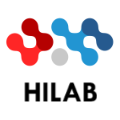

HILAB provides resources and information on latest developments in Hydroinformatics (HI) and Information and Communication Technologies (ICT) and their applications on many science and engineering areas. Recent application areas in our lab includes hydrology, water resources and quality, environmental engineering, disaster preparedness, recovery and response.
HILAB is established by Dr. Ibrahim Demir (team) with many collaborators from around the world. HILAB is a collaborative community platform bringing researcher and educators together to work on Hydroinformatics projects. HILAB provides a one-stop resource library on Hydroinformatics.
HILAB research interests include the following areas:
The following awards and recognitions are received by Director Dr. Demir or HILAB research projects:
Copyright:
Except where otherwise noted, the content on this website is licensed under a Creative Commons Attribution 4.0 International license (CC BY 4.0).